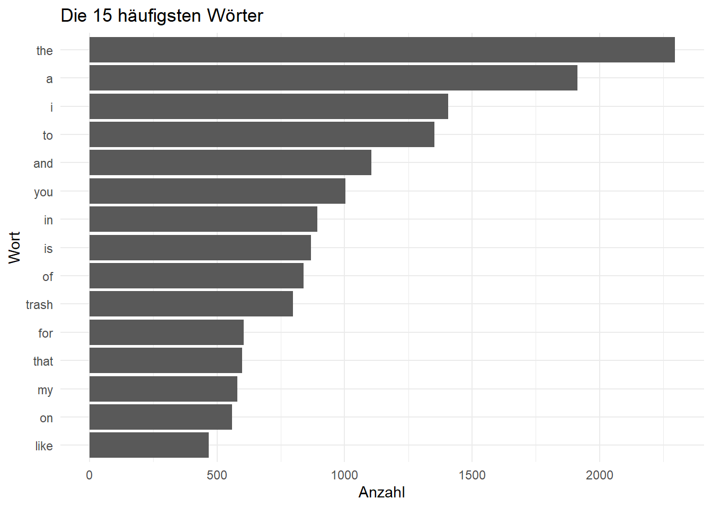
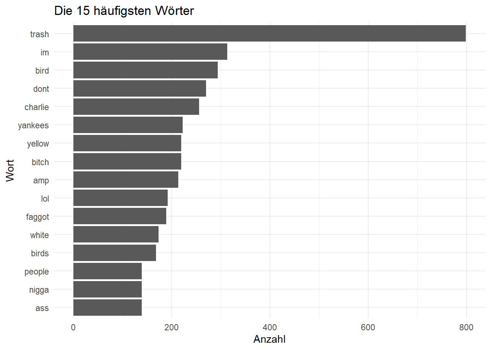
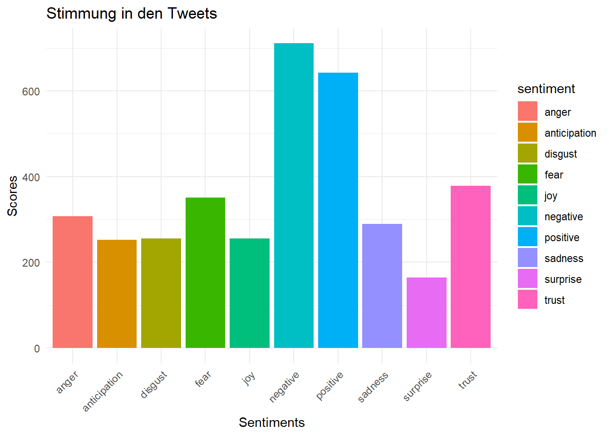
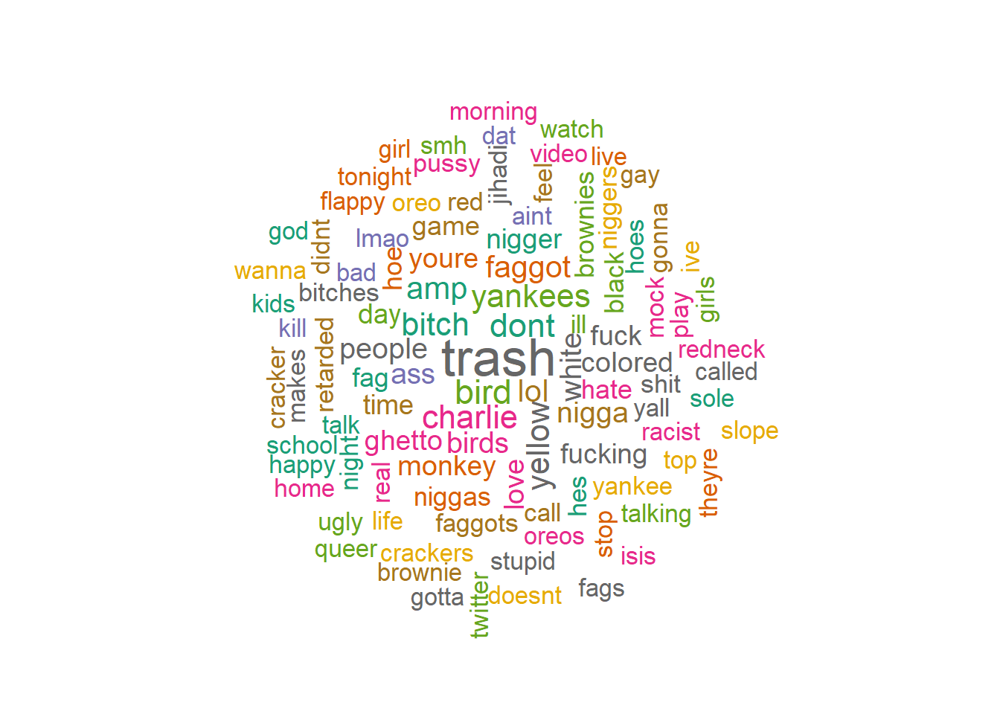
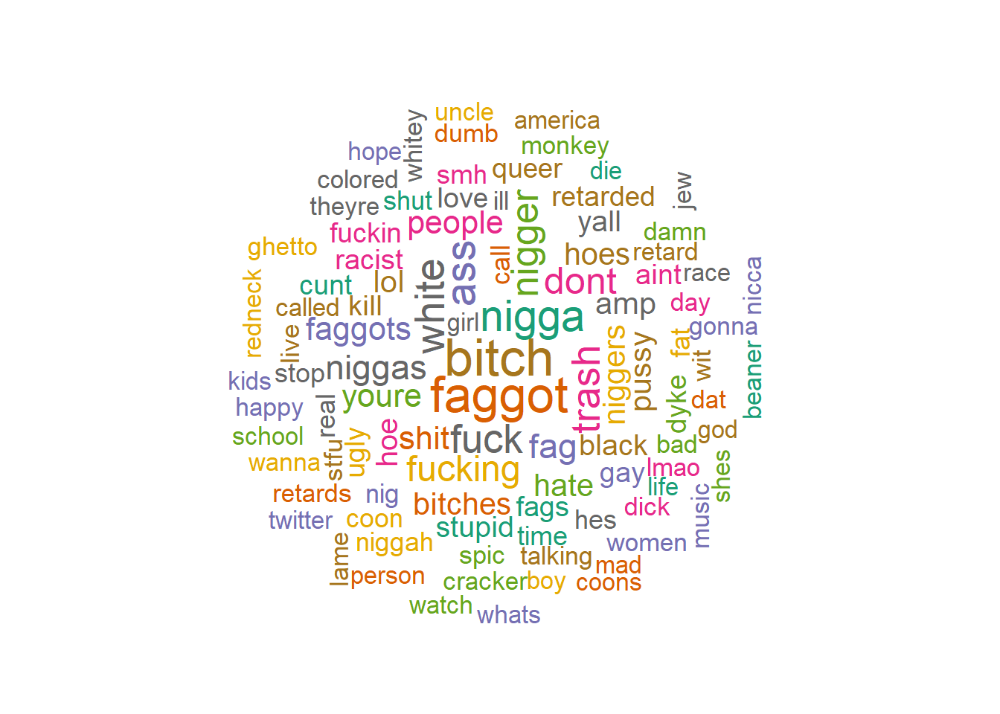
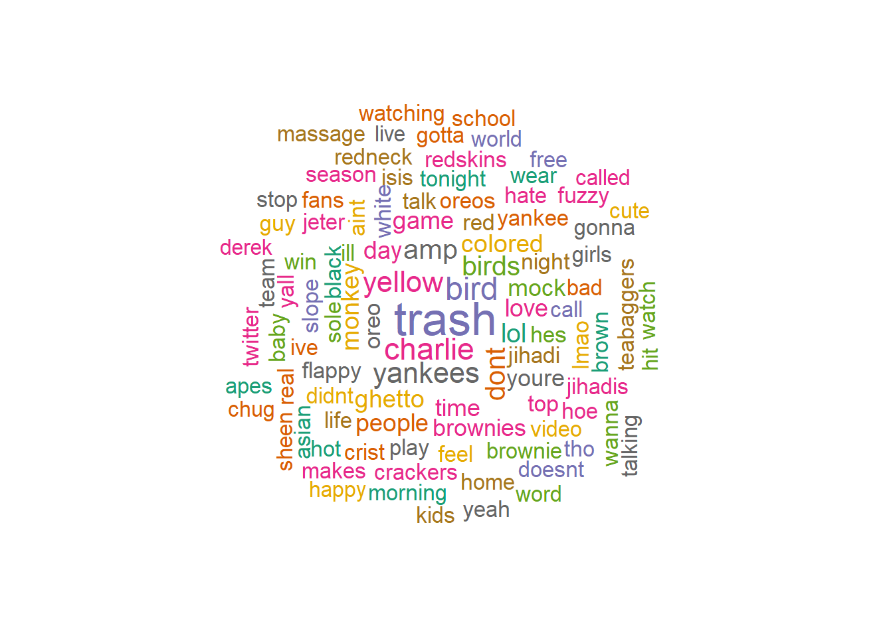
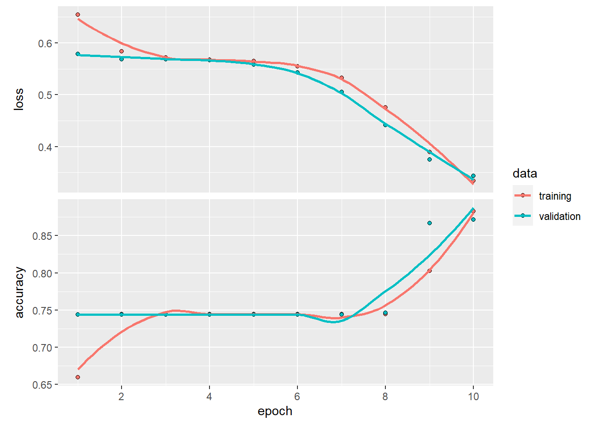

library(tidyverse)
library(tidytext)
library(tidymodels)
library(wordcloud)
library(tictoc)
library(tm) #für Corpus
library(caret) #für Konfusionsmatrix
library(textrecipes) #für u.a. step_textfeature
library(syuzhet) #Stimmungsanalyse
library(readxl) #für Exeldateien
library(xgboost)Hate Speech Klassifikation
Die Klassifikation von Hassrede in Textnachrichten ist entscheidend, um die Auswirkungen von negativem Verhalten in sozialen Medien zu verstehen und einzudämmen. Durch die Entwicklung von Algorithmen und Modellen, die automatisch Hassrede erkennen, können wir potenziell schädliche Inhalte identifizieren und bekämpfen. Dieser Post bietet einen Überblick über einige Ansätze und Techniken zur Erkennung von Hassrede.
Zur Demonstration der Modelle wird ein Datensatz mit Twitternachrichten verwendet.
1 Vorbereitung der Daten
d_hate <- read_csv(pfad)1.1 Datensatz bereinigen
## Tweets bereinigen
clean.text = function(x)
{
x = tolower(x) # alles in Kleinbuchstaben umwandeln
x = gsub("rt", "", x) # rt entfernen
x = gsub("@\\w+", "", x) # alle @ + Namen entfernen
x = gsub("[[:punct:]]", "", x) # Satzzeichen entfernen
x = gsub("[[:digit:]]", "", x) # Zahlen entfernen
x = gsub("http\\w+", "", x) # Links entfernen
x = gsub("http", "", x) # hhtp entfernen wenn es alleine steht
x = gsub("[ |\t]{2,}", " ", x) # doppelte Leerzeichen und Tabs entfernen
x = gsub("^ ", "", x) # Leerzeichen am Anfang entfernen
x = gsub(" $", "", x) # Leerzeichen am Ende entfernen
return(x)
}
#Funktion anwenden
df_hate <- d_hate %>%
mutate(tweet_clean = tweet) %>%
mutate(tweet_clean = clean.text(tweet_clean))
#Splitten
set.seed(142)
train_test_split <- initial_split(df_hate, strata = class)
train_hate <- training(train_test_split)
test_hate <- testing(train_test_split)1.2 Stoppwörter entfernen
Nachdem die Tweets nun bereinigt sind, können die Stoppwörter entfernt werden, da sie in der Regel keine besondere Rolle bei der Interpretation eines Satzes spielen.
# unnest
df_hate <- df_hate %>%
mutate(words = tweet_clean) %>%
unnest_tokens(words, words)
## die 15 häufigsten Wörter
df_hate %>%
count(words, sort = TRUE) %>%
top_n(15) %>%
mutate(words = reorder(words, n)) %>%
ggplot(aes(x = words, y = n)) +
geom_col() +
xlab(NULL) +
coord_flip() +
labs(x = "Wort",
y = "Anzahl",
title = "Die 15 häufigsten Wörter") +
theme_minimal()
Die neun häufigsten Wörter sind Stoppwörter. Dies demonstriert, dass es sinnvoll ist diese zu entfernen.
# Stoppwortentfernung
data("stop_words")
df_hate <- df_hate %>%
anti_join(stop_words, by = c("words" = "word"))Show the Code
## die 15 häufigsten Wörter
df_hate %>%
count(words, sort = TRUE) %>%
top_n(15) %>%
mutate(words = reorder(words, n)) %>%
ggplot(aes(x = words, y = n)) +
geom_col() +
xlab(NULL) +
coord_flip() +
labs(x = "Wort",
y = "Anzahl",
title = "Die 15 häufigsten Wörter") +
theme_minimal()
Das Entfernen der Stoppwörter war erfolgreich. Das nun mit Abstand häufigste Wort ist “trash”.
2 Visualisierung der Tweets
Um einen Überblick über die Tweets zu erhalten, werden diese im Folgenden grafisch analysiert.
2.1 Stimmungsanalyse
# Converting tweets to ASCII, um Verarbeitung zu garantieren
tweets <- df_hate %>%
select(tweet_clean)
tweets <- iconv(tweets, from="UTF-8", to="ASCII", sub="")
#Sentiments erkennen
sentiments <- get_nrc_sentiment((tweets))
#Score erstellen
sentimentscores<-data.frame(colSums(sentiments[,]))
#Spalte umbenennen
names(sentimentscores) <- "Score"
#neue Spalte "sentiment"
sentimentscores <- cbind("sentiment"=rownames(sentimentscores),sentimentscores)
rownames(sentimentscores) <- NULL
#plotten
ggplot(data=sentimentscores,aes(x=sentiment,y=Score))+
geom_bar(aes(fill=sentiment),stat = "identity")+
theme(legend.position="none")+
xlab("Sentiments")+ylab("Scores")+
ggtitle("Stimmung in den Tweets")+
theme_minimal()+
theme(axis.text.x = element_text(angle = 45, hjust = 1))
Diese Graphik bietet einen schönen Überblick über die Stimmung in den Tweets. Positive und Negative Tweets sind relativ ausgeglichen. Jede Stimmung ist ähnlich oft vorhanden.
2.2 Wordcloud
# Worttoken umwandeln
tweets <- Corpus(VectorSource(df_hate$words))
set.seed(42)
wordcloud(tweets, min.freq = 1, max.words = 100, scale = c(2.2,1),
colors=brewer.pal(8, "Dark2"), random.color = T, random.order = F,
rot.per=0.25)
Hier sieht man die häufigsten Wörter aus den Tweets.
Unterscheidet man zwischen Tweets die als Hate Speech kassifiziert sind und denen die kein Hate Speech sind, bekommt man folgende Wordclouds.
Show the Code
## Wortwolke Hate Speech
# Worttoken umwandeln
tweets <- df_hate %>%
filter(class == "hate speech")
tweets <- Corpus(VectorSource(tweets$words))
#Cloud erstellen
set.seed(42)
wordcloud(tweets, min.freq = 1, max.words = 100, scale = c(2.2,1),
colors=brewer.pal(8, "Dark2"), random.color = T, random.order = F,
rot.per=0.25)
Show the Code
## Wortwolke Non Hate Speech
# Worttoken umwandeln
tweets <- df_hate %>%
filter(class != "hate speech")
tweets <- Corpus(VectorSource(tweets$words))
#Cloud erstellen
set.seed(42)
wordcloud(tweets, min.freq = 1, max.words = 100, scale = c(2.2,1),
colors=brewer.pal(8, "Dark2"), random.color = T, random.order = F,
rot.per=0.25)
Auffällig ist, dass bei No Hate Speech auch das Wort “hoe” vorkommt (zu sehen rechts unten Mitte).
Erklärt werden kann dies mit folgendem Tweet.
Show the Code
tweets <- df_hate %>%
filter(class != "hate speech") %>%
filter(words == "hoe")
tweets[5, "tweet_clean"]Homonyme wie dieses, könnten zu Fehlern in der Vorhersage führen.
2.3 Wortbeziehungen (Bigram)
Die am häufigsten vorkommenden Wortpaare sind in folgender interaktiven Graphik zu sehen.
Navigation: linke Maustaste: bewegen; Mausrad: zoomen
Show the Code
## Bigram interaktiv
#bigram Tabelle
bigram <- df_hate %>%
unnest_tokens(
input = tweet_clean,
output = bigram,
token = 'ngrams',
n = 2
) %>%
filter(! is.na(bigram))
bigram %<>%
separate(col = bigram, into = c('word1', 'word2'), sep = ' ') %>%
filter(! word1 %in% stop_words$word) %>%
filter(! word2 %in% stop_words$word) %>%
filter(! is.na(word1)) %>%
filter(! is.na(word2))
bigram_count <- bigram %>%
count(word1, word2, sort = TRUE) %>%
rename(weight = n)
# bigram erstellen
library(networkD3)
library(igraph)
library(magrittr)
threshold <- 50
network <- bigram_count %>%
filter(weight > threshold) %>%
graph_from_data_frame(directed = FALSE)
# Anzahl der Kanten
V(network)$degree <- strength(graph = network)
# Gewichtung
E(network)$width <- E(network)$weight/max(E(network)$weight)
# Create networkD3 object.
network.D3 <- igraph_to_networkD3(g = network)
# Define node size.
network.D3$nodes %<>% mutate(Degree = (1E-2)*V(network)$degree)
# Define color group
network.D3$nodes %<>% mutate(Group = 1)
# Define edges width.
network.D3$links$Width <- 10*E(network)$width
forceNetwork(
Links = network.D3$links,
Nodes = network.D3$nodes,
Source = 'source',
Target = 'target',
NodeID = 'name',
Group = 'Group',
opacity = 0.9,
Value = 'Width',
Nodesize = 'Degree',
# We input a JavaScript function.
linkWidth = JS("function(d) { return Math.sqrt(d.value); }"),
fontSize = 12,
zoom = TRUE,
opacityNoHover = 1
)3 Huggingface Modell
Um Hate Speech in Textnachrichten zu klassifizieren, können vortrainierte Modelle wie das “roberta” Modell von Hugging Face verwendet werden. Dieses Modell wurde auf Grundlage von 40.000 Textnachrichten entwickelt.
library(reticulate)
use_virtualenv("~/Studium/blognilsbiller/VirtualEnv")from transformers import pipelineWARNING:tensorflow:From C:\Users\NILS~1.DES\DOCUME~1\Studium\BLOGNI~1\VIRTUA~1\Lib\site-packages\keras\src\losses.py:2976: The name tf.losses.sparse_softmax_cross_entropy is deprecated. Please use tf.compat.v1.losses.sparse_softmax_cross_entropy instead.import tensorflowclassifier = pipeline("text-classification", model="facebook/roberta-hate-speech-dynabench-r4-target")tweets <- test_hate$tweet_cleantweets = r.tweets
results = classifier(tweets)result <- py$results
# Extrahieren der Labels
labels <- lapply(result, function(element) element$label)
# Zusammenführen der Ergebnisse mit dem ursprünglichen Datensatz
tweets_zsm <- bind_cols(test_hate, pred = unlist(labels))
# Umwandeln in Faktoren und Umbenennen der Vorhersagen
tweets_zsm <- tweets_zsm %>%
mutate(pred = factor(case_when(pred == "hate" ~ "hate speech",
pred == "nothate" ~ "other")))#Vorhersage
my_metrics <- metric_set(accuracy, f_meas)
my_metrics(tweets_zsm,
truth = as.factor(class), #estimate ist factor, also class anpassen
estimate = pred)Die Metrics dieses vortrainierten Modells sind ziemlich gut. Diese Werte können als Vergleichsmaßstab für die selbst entwickelten Modelle dienen.
4 Rekurrentes Neuronales Netzwerk
Das LSTM (Long Short-Term Memory) Modell ist eine spezielle Form der Rekurrenten Neuronalen Netzwerke (RNNs), die besonders gut für die Verarbeitung von Sequenzdaten wie Texten geeignet sind.
4.1 LSTM Modell erstellen
library(keras)
# Datensatz bereinigt, ohne bereits Tokenisiert
data_all <- rbind(train_hate, test_hate)
# Tokenisieren
num_words_train <- 1024
tokens <- text_tokenizer(num_words = num_words_train,
lower = TRUE) %>%
fit_text_tokenizer(data_all$tweet_clean)
#train splitten für Kreuzvalidierung
set.seed(142)
train_split <- initial_split(train_hate, strata = class, prop = 0.8)
data_train <- training(train_split)
data_val <- testing(train_split)
#maximale Länge eines Tweets
maxlen <- max(str_count(train_hate$tweet_clean, "\\w+")) + 1
# prepare data for predictors x
data_train_x <- texts_to_sequences(tokens, data_train$tweet_clean) %>%
pad_sequences(maxlen = maxlen)
data_val_x <- texts_to_sequences(tokens, data_val$tweet_clean) %>%
pad_sequences(maxlen = maxlen)
data_test_x <- texts_to_sequences(tokens, test_hate$tweet_clean) %>%
pad_sequences(maxlen = maxlen)
# Konvertieren in numerische Form
data_train <- data_train %>%
mutate(class = as.numeric(factor(class)))
data_val <- data_val %>%
mutate(class = as.numeric(factor(class)))
# prepare data for target y
data_train_y <- to_categorical(data_train$class - 1, num_classes = 2)
data_val_y <- to_categorical(data_val$class - 1, num_classes = 2)
#für Reproduzierbarkeit Zufallszahlengenerierung in R zu konfigurieren
RNGkind(sample.kind = "Rounding")
initializer <- initializer_random_normal(seed = 100)
## Model erstellen
model_keras <- keras_model_sequential()
# layer lstm 1 settings
unit_lstm1 <- 256 #Neuronen
dropout_lstm1 <- 0.5 #Dropout um Overfittig zu reduzieren
recurrent_dropout_lstm1 <- 0.5
# layer lstm 2 settings
unit_lstm2 <- 32
dropout_lstm2 <- 0.5
recurrent_dropout_lstm2 <- 0.5
model_keras %>%
layer_embedding(
name = "input",
input_dim = num_words_train,
input_length = maxlen,
output_dim = maxlen
) %>%
layer_dropout(
name = "embedding_dropout",
rate = 0.6
) %>%
# lstm1
layer_lstm(
name = "lstm1",
units = unit_lstm1,
dropout = dropout_lstm1,
recurrent_dropout = recurrent_dropout_lstm1,
return_sequences = TRUE
) %>%
# lstm2
layer_lstm(
name = "lstm2",
units = unit_lstm2,
dropout = dropout_lstm2,
recurrent_dropout = recurrent_dropout_lstm2,
return_sequences = FALSE
) %>%
# output layer
layer_dense(
name = "output",
units = 2,
activation = "sigmoid"
)
# Compile Model
model_keras %>%
compile(optimizer = optimizer_adam(learning_rate = 0.01),
metrics = "accuracy",
loss = "binary_crossentropy")
# model summary
summary(model_keras)Model: "sequential"
________________________________________________________________________________
Layer (type) Output Shape Param #
================================================================================
input (Embedding) (None, 33, 33) 33792
embedding_dropout (Dropout) (None, 33, 33) 0
lstm1 (LSTM) (None, 33, 256) 296960
lstm2 (LSTM) (None, 32) 36992
output (Dense) (None, 2) 66
================================================================================
Total params: 367810 (1.40 MB)
Trainable params: 367810 (1.40 MB)
Non-trainable params: 0 (0.00 Byte)
________________________________________________________________________________4.2 Model trainieren
epochs <- 10 #Durchläufe
batch_size <- 1024
# fit the model
tic()
history <- model_keras %>%
fit(
data_train_x,
data_train_y,
batch_size = batch_size,
epochs = epochs,
verbose = 1,
validation_data = list(data_val_x, data_val_y))Epoch 1/10
1/4 [======>.......................] - ETA: 16s - loss: 0.6935 - accuracy: 0.4658
2/4 [==============>...............] - ETA: 1s - loss: 0.6747 - accuracy: 0.5962
3/4 [=====================>........] - ETA: 0s - loss: 0.6550 - accuracy: 0.6484
4/4 [==============================] - ETA: 0s - loss: 0.6543 - accuracy: 0.6595
4/4 [==============================] - 8s 833ms/step - loss: 0.6543 - accuracy: 0.6595 - val_loss: 0.5791 - val_accuracy: 0.7440
Epoch 2/10
1/4 [======>.......................] - ETA: 2s - loss: 0.5681 - accuracy: 0.7559
2/4 [==============>...............] - ETA: 1s - loss: 0.5920 - accuracy: 0.7373
3/4 [=====================>........] - ETA: 0s - loss: 0.5875 - accuracy: 0.7419
4/4 [==============================] - ETA: 0s - loss: 0.5836 - accuracy: 0.7445
4/4 [==============================] - 3s 682ms/step - loss: 0.5836 - accuracy: 0.7445 - val_loss: 0.5684 - val_accuracy: 0.7440
Epoch 3/10
1/4 [======>.......................] - ETA: 2s - loss: 0.5577 - accuracy: 0.7539
2/4 [==============>...............] - ETA: 1s - loss: 0.5578 - accuracy: 0.7549
3/4 [=====================>........] - ETA: 0s - loss: 0.5733 - accuracy: 0.7435
4/4 [==============================] - ETA: 0s - loss: 0.5720 - accuracy: 0.7445
4/4 [==============================] - 3s 675ms/step - loss: 0.5720 - accuracy: 0.7445 - val_loss: 0.5688 - val_accuracy: 0.7440
Epoch 4/10
1/4 [======>.......................] - ETA: 2s - loss: 0.5885 - accuracy: 0.7256
2/4 [==============>...............] - ETA: 1s - loss: 0.5644 - accuracy: 0.7485
3/4 [=====================>........] - ETA: 0s - loss: 0.5679 - accuracy: 0.7445
4/4 [==============================] - ETA: 0s - loss: 0.5675 - accuracy: 0.7445
4/4 [==============================] - 3s 674ms/step - loss: 0.5675 - accuracy: 0.7445 - val_loss: 0.5665 - val_accuracy: 0.7440
Epoch 5/10
1/4 [======>.......................] - ETA: 2s - loss: 0.5616 - accuracy: 0.7500
2/4 [==============>...............] - ETA: 1s - loss: 0.5646 - accuracy: 0.7461
3/4 [=====================>........] - ETA: 0s - loss: 0.5628 - accuracy: 0.7467
4/4 [==============================] - ETA: 0s - loss: 0.5649 - accuracy: 0.7445
4/4 [==============================] - 3s 685ms/step - loss: 0.5649 - accuracy: 0.7445 - val_loss: 0.5580 - val_accuracy: 0.7440
Epoch 6/10
1/4 [======>.......................] - ETA: 2s - loss: 0.5513 - accuracy: 0.7520
2/4 [==============>...............] - ETA: 1s - loss: 0.5411 - accuracy: 0.7588
3/4 [=====================>........] - ETA: 0s - loss: 0.5502 - accuracy: 0.7490
4/4 [==============================] - ETA: 0s - loss: 0.5545 - accuracy: 0.7445
4/4 [==============================] - 3s 668ms/step - loss: 0.5545 - accuracy: 0.7445 - val_loss: 0.5425 - val_accuracy: 0.7440
Epoch 7/10
1/4 [======>.......................] - ETA: 2s - loss: 0.5356 - accuracy: 0.7490
2/4 [==============>...............] - ETA: 1s - loss: 0.5434 - accuracy: 0.7388
3/4 [=====================>........] - ETA: 0s - loss: 0.5335 - accuracy: 0.7454
4/4 [==============================] - ETA: 0s - loss: 0.5325 - accuracy: 0.7445
4/4 [==============================] - 3s 673ms/step - loss: 0.5325 - accuracy: 0.7445 - val_loss: 0.5053 - val_accuracy: 0.7440
Epoch 8/10
1/4 [======>.......................] - ETA: 2s - loss: 0.4946 - accuracy: 0.7480
2/4 [==============>...............] - ETA: 1s - loss: 0.4917 - accuracy: 0.7397
3/4 [=====================>........] - ETA: 0s - loss: 0.4801 - accuracy: 0.7435
4/4 [==============================] - ETA: 0s - loss: 0.4754 - accuracy: 0.7445
4/4 [==============================] - 3s 667ms/step - loss: 0.4754 - accuracy: 0.7445 - val_loss: 0.4414 - val_accuracy: 0.7464
Epoch 9/10
1/4 [======>.......................] - ETA: 2s - loss: 0.4158 - accuracy: 0.7480
2/4 [==============>...............] - ETA: 1s - loss: 0.3956 - accuracy: 0.7812
3/4 [=====================>........] - ETA: 0s - loss: 0.3909 - accuracy: 0.7965
4/4 [==============================] - ETA: 0s - loss: 0.3891 - accuracy: 0.8029
4/4 [==============================] - 3s 665ms/step - loss: 0.3891 - accuracy: 0.8029 - val_loss: 0.3747 - val_accuracy: 0.8667
Epoch 10/10
1/4 [======>.......................] - ETA: 2s - loss: 0.3502 - accuracy: 0.8760
2/4 [==============>...............] - ETA: 1s - loss: 0.3474 - accuracy: 0.8799
3/4 [=====================>........] - ETA: 0s - loss: 0.3331 - accuracy: 0.8844
4/4 [==============================] - ETA: 0s - loss: 0.3344 - accuracy: 0.8831
4/4 [==============================] - 3s 672ms/step - loss: 0.3344 - accuracy: 0.8831 - val_loss: 0.3434 - val_accuracy: 0.8714# history plot
plot(history)
toc()33.88 sec elapsed4.3 Modell Evaluation
Die Anwendung des Models auf die Datensätze train, validation und test ergibt nachstehende Metriken.
Show the Code
# vorhersagen auf train-Datensatz
data_train_pred <- model_keras %>%
predict(data_train_x) %>%
k_argmax() %>%
as.vector()105/105 - 2s - 2s/epoch - 16ms/stepShow the Code
#Metriken train-Datensatz
conf.matrix <- confusionMatrix(
factor(data_train_pred, labels = c("no", "yes")),
factor(data_train$class, labels = c("no", "yes")),
positive = "yes"
)
#Anzeigen
conf.matrix$byClass %>% round(digits = 3) * 100 Sensitivity Specificity Pos Pred Value
94.1 85.1 94.8
Neg Pred Value Precision Recall
83.2 94.8 94.1
F1 Prevalence Detection Rate
94.5 74.4 70.1
Detection Prevalence Balanced Accuracy
73.9 89.6 Show the Code
# vorhersagen auf data_val (= Datensatz für Kreuzvalidierung)
data_val_pred <- model_keras %>%
predict(data_val_x) %>%
k_argmax() %>%
as.vector()27/27 - 0s - 332ms/epoch - 12ms/stepShow the Code
#Metriken für Teil von train-Datensatz (data_val)
conf.matrix <- confusionMatrix(
factor(data_val_pred, labels = c("no", "yes")),
factor(data_val$class, labels = c("no", "yes")),
positive = "yes"
)
#Anzeigen
conf.matrix$byClass %>% round(digits = 3) * 100 Sensitivity Specificity Pos Pred Value
91.4 74.9 91.4
Neg Pred Value Precision Recall
74.9 91.4 91.4
F1 Prevalence Detection Rate
91.4 74.4 68.0
Detection Prevalence Balanced Accuracy
74.4 83.1 Show the Code
# vorhersagen auf test-Datensatz
data_test_pred <- model_keras %>%
predict(data_test_x) %>%
k_argmax() %>%
as.vector()44/44 - 1s - 553ms/epoch - 13ms/stepShow the Code
#Metriken test-Datensatz
conf.matrix <- confusionMatrix(
factor(data_test_pred, labels = c("no", "yes")),
factor(test_hate$class, labels = c("no", "yes")),
positive = "yes"
)
#Anzeigen
conf.matrix$byClass %>% round(digits = 3) * 100 Sensitivity Specificity Pos Pred Value
92.8 79.3 92.9
Neg Pred Value Precision Recall
79.1 92.9 92.8
F1 Prevalence Detection Rate
92.8 74.4 69.0
Detection Prevalence Balanced Accuracy
74.3 86.1 Die Hate Speech Kalassifikation fällt schlechter aus als beim Hugging Face Modell. Dennoch kann man zufrieden sein.
5 Modell mit Tidymodels
Nun werden Modelle mit Tidymodels erstellt. Verwendet werden hierfür Random Forest, Nearest Neighbor und XGBoost.
mod_rand <- rand_forest(mode = "classification")
mod_neighbor <- nearest_neighbor(mode = "classification")
mod_xgb <- boost_tree(mode = "classification")
## Mit Tuning
mod_randT <-
rand_forest(mtry = tune(),
min_n = tune(),
trees = 1000, #guter Wert (keine Veränderungen durch tunen)
mode = "classification") %>%
set_engine("ranger", num.threads = 4)
mod_neighborT <-
nearest_neighbor(neighbors = tune(),
mode = "classification")
mod_xgbT <-
boost_tree(min_n = tune(),
trees = 1000,
learn_rate = tune()) %>%
set_mode("classification") %>%
set_engine("xgboost", nthreads = parallel::detectCores()-1)#Daten (ohne Tokens) und Lexikon laden
train_mod <- train_hate %>%
select(-tweet)
test_mod <- test_hate %>%
select(-tweet)
Insults <- read_excel(insult_pfad)
names(Insults) <- "word" #get_sentiment braucht Bezeichnung word
Insults$value <- 1
#recipe
rec <- recipe(class ~ ., data = train_mod) %>%
update_role(id, new_role = "id") %>%
update_role(tweet_clean, new_role = "ignore") %>% #Spalte wird kein Prädiktor
step_mutate(insult = get_sentiment(tweet_clean,
method = "custom",
lexicon = Insults)) %>%
step_textfeature(tweet_clean, keep_original_cols = TRUE) %>%
step_nzv(all_predictors()) %>% #textfeature erzeugt viele sinnlose Spalten
step_tokenize(tweet_clean) %>%
step_stopwords(tweet_clean, keep = FALSE) %>%
step_tokenfilter(tweet_clean, max_tokens = 1e3) %>%
step_tfidf(tweet_clean, keep_original_cols = TRUE) %>%
step_nzv(all_predictors()) %>% #(zweimal, um sofort Spalten zu entfernen)
step_normalize(all_numeric_predictors())
rec_prepped <- prep(rec)
data_prep <- bake(rec_prepped, new_data = NULL)
# Erkenntisse bake: tfidf wird durch step_nzv komplett entfernt
#Kreuzvalidierung
set.seed(42)
kv <- vfold_cv(train_mod, strata = class)Die Leistung der trainierten Modelle fällt wie folgt aus.
5.1 Ohne Tuning
Show the Code
wf_rand <-
workflow() %>%
add_model(mod_rand) %>%
add_recipe(rec)
tic()
fit_rand <-
fit(wf_rand,
data = train_mod)
toc()9.92 sec elapsedShow the Code
#Vorhersage
tic()
preds <-
predict(fit_rand, new_data = test_mod)
toc()1.77 sec elapsedShow the Code
#Test
Vorgersage <-
test_mod %>%
bind_cols(preds)
my_metrics <- metric_set(accuracy, f_meas)
my_metrics(Vorgersage,
truth = as.factor(class), #estimate ist factor, also class umwandeln
estimate = .pred_class)Show the Code
wf_n <-
workflow() %>%
add_model(mod_neighbor) %>%
add_recipe(rec)
tic()
fit_n <-
fit(wf_n,
data = train_mod)
toc()8.54 sec elapsedShow the Code
#Vorhersage
tic()
preds <-
predict(fit_n, new_data = test_mod)
toc()1.49 sec elapsedShow the Code
#Test
Vorgersage <-
test_mod %>%
bind_cols(preds)
my_metrics <- metric_set(accuracy, f_meas)
my_metrics(Vorgersage,
truth = as.factor(class), #estimate ist factor, also class umwandeln
estimate = .pred_class)Show the Code
wf_boost <-
workflow() %>%
add_model(mod_xgb) %>%
add_recipe(rec)
tic()
fit_boost <-
fit(wf_boost,
data = train_mod)
toc()8.25 sec elapsedShow the Code
#Vorhersage
tic()
preds <-
predict(fit_boost, new_data = test_mod)
toc()1.36 sec elapsedShow the Code
#Test
Vorgersage <-
test_mod %>%
bind_cols(preds)
my_metrics <- metric_set(accuracy, f_meas)
my_metrics(Vorgersage,
truth = as.factor(class), #estimate ist factor, also class umwandeln
estimate = .pred_class)Ohne Tuning erhält man bereits gute Accuracy-Werte, welche gut mit dem LSTM Modell mithalten können. Die Rechenzeit von unter 10 Sekunden ist ebenfalls sehr angenehm.
Mal sehen, ob sich die Modelle durch Tuning verbessern.
5.2 Mit Tuning
Show the Code
wf_randT <-
workflow() %>%
add_model(mod_randT) %>%
add_recipe(rec)
tic()
set.seed(42)
rf_tune <- tune_grid(object = wf_randT, resamples = kv, grid = 5,
control = control_grid(save_workflow = TRUE))
toc()151.19 sec elapsedShow the Code
#Ergebnisse
best_model_rf <- fit_best(rf_tune)
rf_aufTest <- last_fit(best_model_rf, train_test_split)
rf_aufTest %>% collect_metrics()Show the Code
wf_knnT <-
workflow() %>%
add_model(mod_neighborT) %>%
add_recipe(rec)
tic()
set.seed(42)
knn_tune <- tune_grid(object = wf_knnT, resamples = kv, grid = 5,
control = control_grid(save_workflow = TRUE))
toc()85.98 sec elapsedShow the Code
#Ergebnisse
best_model_knn <- fit_best(knn_tune)
knn_aufTest <- last_fit(best_model_knn, train_test_split)
knn_aufTest %>% collect_metrics()Show the Code
wf_xgbT <-
workflow() %>%
add_model(mod_xgbT) %>%
add_recipe(rec)
tic()
set.seed(42)
xgb_tune <- tune_grid(object = wf_xgbT, resamples = kv, grid = 5,
control = control_grid(save_workflow = TRUE))
toc()204.5 sec elapsedShow the Code
#Ergebnisse
best_model_xgb <- fit_best(xgb_tune)[22:07:42] WARNING: src/learner.cc:767:
Parameters: { "nthreads" } are not used.Show the Code
xgb_aufTest <- last_fit(best_model_xgb, train_test_split)
xgb_aufTest %>% collect_metrics()Wenn man die Accuracy zwischen den optimierten und den nicht optimierten Modellen vergleicht, ist diese kaum besser oder gleich gut. Folglich kann man sich in diesem Fall den erhöhten Zeitaufwand, der durch das Tuning entsteht, sparen.
6 Fazit
Die Klassifikation von Hate Speech in Textnachrichten stellt eine komplexe und anspruchsvolle Aufgabe dar. Durch den Einsatz von maschinellen Lernmodellen und Textanalysemethoden konnten jedoch vielversprechende Ergebnisse erzielt werden.
Insgesamt kann festgestellt werden, dass das Hugging Face Modell am besten abschnitt. Dennoch konnten die selbst trainierten Modelle gut mithalten. Die nicht optimierten Tidymodels Modelle sind mit einer Rechenzeit von ca. 10 Sekunden extrem schnell. Wenn man schnelle Ergebnisse möchte, sind diese auf jeden Fall zu Empfehlen.
Der Post zeigt, dass der Einsatz von Machine-Learning-Techniken die Bekämpfung von Hassrede in den sozialen Medien unterstützen kann. Es bleibt jedoch eine Herausforderung, diese Technologie verantwortungsvoll einzusetzen und sicherzustellen, dass die Meinungsfreiheit respektiert wird und keine unbeabsichtigten Nebenwirkungen entstehen.